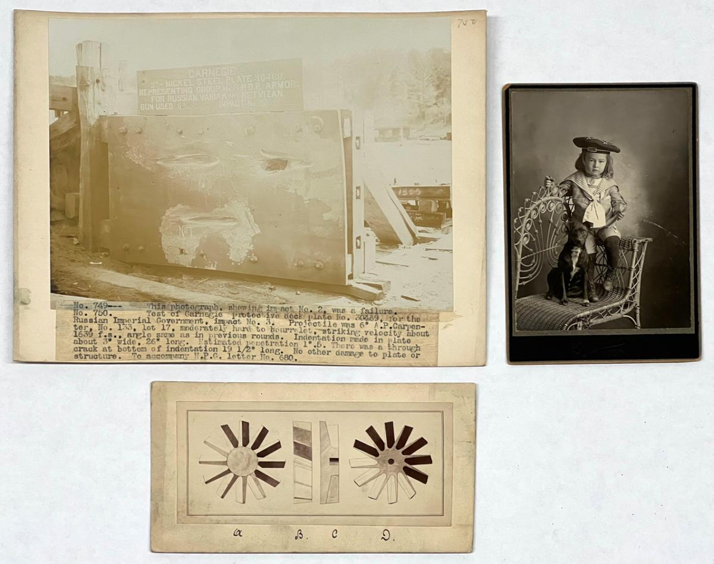
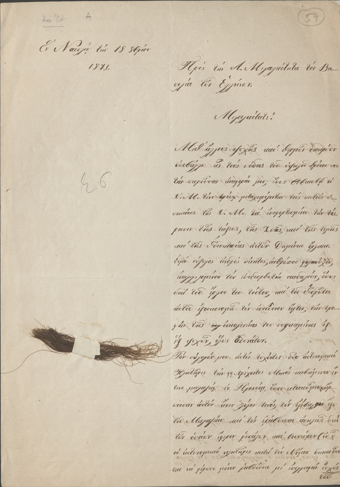
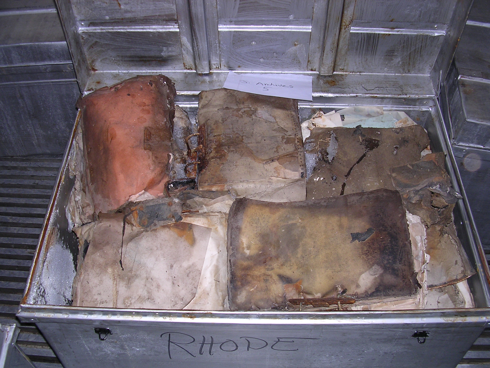
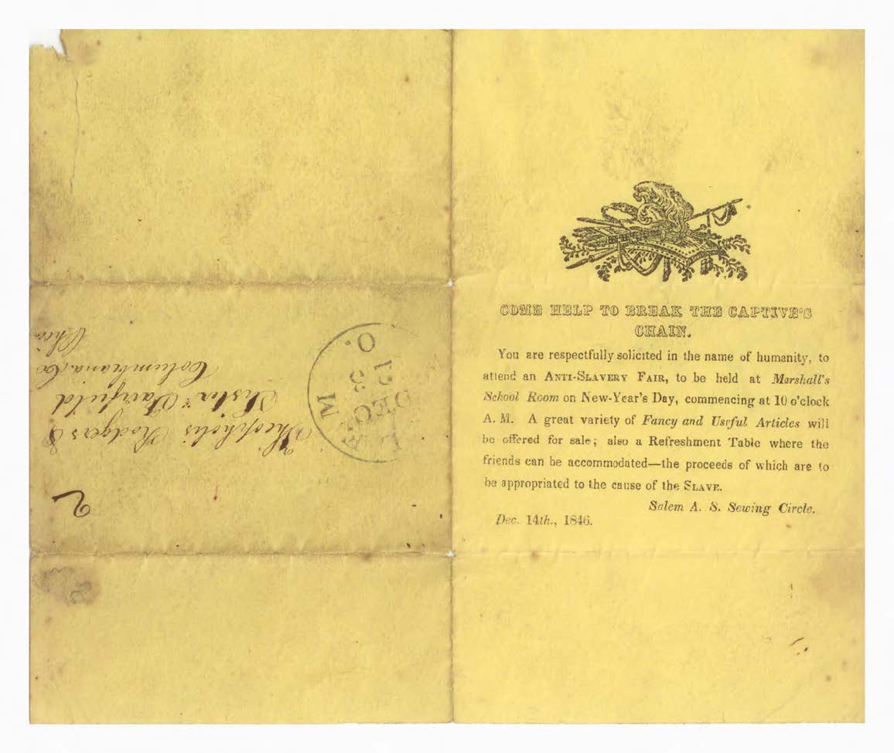

Gaps & Structural Absences
The most important thing in an archive is sometimes what is not there. Gaps are not accidents. They are the result of decisions, some deliberate, some structural, some so deeply embedded in institutional practice that the people making them did not recognize them as decisions at all. What gets collected reflects who was doing the collecting, who they considered worth documenting, and whose testimony they trusted enough to preserve.
Derrida describes this in terms of what he calls the death drive within the archive, the impulse toward destruction that runs alongside the impulse to preserve. Institutions archive selectively, and that selection is shaped by what feels safe to keep, what serves the institution's self-image, and what might become inconvenient. The deliberate destruction of colonial records by the British government before independence was granted to Kenya, Malaysia, and other territories is one of the most documented examples of this, files burned or dumped at sea specifically to prevent future accountability. The gap in the archive is not an absence of history. It is evidence of a choice.




Schwartz and Cook argue that understanding archives requires understanding what they were never designed to collect. The record-keeping systems of most major institutions were built around the documentation of official transactions, decisions made, orders given, property transferred. The experience of living within those decisions, the fear, the displacement, the daily texture of life under a system that did not consider you fully legible, was not the kind of thing those systems were built to record. That does not mean it went undocumented. It means the documentation exists elsewhere, in letters, in oral history, in art, in community archives that institutions have not always recognized as archives at all.
Ketelaar writes about the silences that accumulate within a collection over time, the things that were present and lost, the things that were never collected, and the things that exist but have been described in ways that make them unfindable. A document filed under the wrong name, a photograph catalogued without identifying the people in it, a collection donated by a community that was then described entirely in the language of the institution receiving it rather than the community that created it. These are structural absences, and they compound. Each one makes the next one harder to see.
Ignoring Classifications
Classification is how archives organize knowledge, and it is one of the most consequential things an institution does. The categories used to sort and describe material determine what can be found, what gets connected to what, and what relationships between documents remain invisible because the classification system was not built to see them. A filing system is a worldview made administrative.
Derrida's argument about the arkheion is relevant here in a specific way. The authority to classify is the authority to determine what something is and where it belongs, and that authority has historically been exercised by a very narrow range of people. The classification systems of major national archives were built in the 19th and early 20th centuries, during the height of imperial administration, by people who brought to the task all the assumptions of that moment about race, gender, nationality, and what kinds of human activity were significant enough to name. Those assumptions are still embedded in the systems. Researchers looking for material about colonized communities, women, working-class people, or anyone else who was not the intended subject of institutional record-keeping often find that the material exists but the classification system does not point toward it.
Ketelaar's concept of the tacit narrative is useful for understanding how this works in practice. Every collection has a story built into its arrangement, a set of implicit assumptions about what the material is for and who it serves. That story is rarely stated explicitly. It operates through the categories chosen, the level of description applied to different parts of the collection, and the connections made or not made between related materials. To ignore classification, to read against the finding aid rather than with it, is often the only way to recover what the tacit narrative was designed to leave out.
Schwartz and Cook argue that the most significant act of archival reform is not adding new material but rethinking the frameworks used to describe existing material. Reclassification, redescription, and the centering of community expertise in the cataloguing process can make visible what has always been there but was arranged to be invisible. This is slow, unglamorous work, and it is resisted by institutions that have an interest in the authority of their existing systems. But it is where a great deal of the most significant archival scholarship is now happening.
Ordering & Collection
The order of an archive is not the order of history. It is the order that made sense to the people who built the collection, at a particular moment, with particular resources, serving particular needs. That order shapes every subsequent use of the material, and changing it is one of the most political acts an institution can undertake.
Derrida writes that the archive is always a promise about the future as much as a record of the past. What we choose to collect now determines what future researchers will be able to find, and what they will be able to know. Collection policy is therefore a form of power over time, a decision made in the present about what the future will be allowed to remember. The institutions that have historically held that power have not been neutral. They have collected what confirmed their authority, what supported their version of events, and what was produced by people they recognized as legitimate producers of knowledge.
Ketelaar's attention to the relationship between archives and identity is most pointed here. Collections are not just gathered, they are curated into coherence, arranged to tell a story that feels complete even when it is radically partial. The community whose history was collected by an outside institution, described in someone else's language, ordered according to someone else's logic, and housed in a building they may not feel welcome to enter, is experiencing a particular kind of dispossession that is distinct from but related to the more visible forms. Their history exists. It is just arranged to serve someone else.
Schwartz and Cook end with an argument that is also a responsibility. If archives are sites where power is exercised, then archivists are people who exercise power, and that means they are accountable for how they use it. The ordering of a collection, the decision to acquire or not acquire, to describe or misdescribe, to open access or restrict it, these are ethical decisions with real consequences for real communities. The archive that presents itself as neutral is not avoiding that responsibility. It is just refusing to acknowledge it, and that refusal is itself a choice.